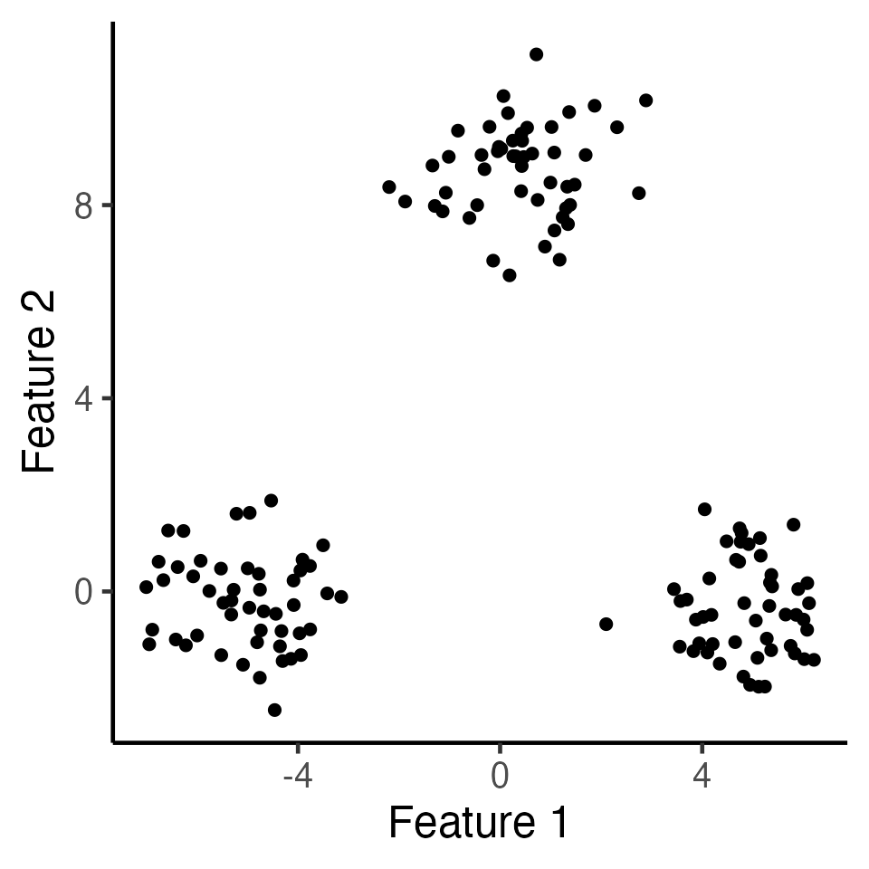

Software tutorials
Tutorials.RmdIn this tutorial, we demonstrate basic use of the KmeansInference package.
First we load relevant packages:
We first generate data according to \(\mathbf{X} \sim \mathcal{MN}_{n\times q}(\boldsymbol{\mu}, \textbf{I}_n, \sigma^2 \textbf{I}_q)\) with \(n=150,q=2,\sigma=1,\) and \[\begin{align} \label{eq:power_model} \boldsymbol{\mu}_1 =\ldots = \boldsymbol{\mu}_{50} = \begin{bmatrix} -\delta/2 \\ 0_{q-1} \end{bmatrix}, \; {\boldsymbol\mu}_{51}=\ldots = \boldsymbol{\mu}_{100} = \begin{bmatrix} 0_{q-1} \\ \sqrt{3}\delta/2 \end{bmatrix} ,\; \boldsymbol{\mu}_{101}=\ldots = \boldsymbol{\mu}_{150} = \begin{bmatrix} \delta/2 \\ 0_{q-1} \end{bmatrix}. \end{align}\] Here, we can think of \(\mathcal{C}_1 = \{1,\ldots,50\},\mathcal{C}_2 = \{51,\ldots,100\},\mathcal{C}_3 = \{101,\ldots,150\}\) as the ``true clusters’’. In the figure below, we display one such simulation \(\mathbf{x}\in\mathbb{R}^{100\times 2}\) with \(\delta=10\).
set.seed(2022)
n <- 150
true_clusters <- c(rep(1, 50), rep(2, 50), rep(3, 50))
delta <- 10
q <- 2
mu <- rbind(c(delta/2,rep(0,q-1)), c(rep(0,q-1), sqrt(3)*delta/2), c(-delta/2,rep(0,q-1)) )
sig <- 1
X <- matrix(rnorm(n*q, sd=sig), n, q) + mu[true_clusters, ]
ggplot(data.frame(X), aes(x=X1, y=X2)) +
geom_point(cex=2) + xlab("Feature 1") + ylab("Feature 2") +
theme_classic(base_size=18) + theme(legend.position="none") +
scale_colour_manual(values=c("dodgerblue3", "rosybrown", "orange")) +
theme(legend.title = element_blank(),
plot.title = element_text(hjust = 0.5))
k-means clustering (K=3)
In the code below, we call the kmeans_estimation function to estimate spikes using the Lloyd’s algorithm with \(K=3\). In the figure below, observations are colored by the clusters obtained via \(k\)-means clustering with \(K=3\). In this case, \(k\)-means recovers the true clusters perfectly.
k <- 3
estimated_clusters <- kmeans_estimation(X, k,iter.max = 20,seed = 2021)$final_cluster
table(true_clusters,estimated_clusters)
#> estimated_clusters
#> true_clusters 1 2 3
#> 1 0 50 0
#> 2 0 0 50
#> 3 50 0 0
ggplot(data.frame(X), aes(x=X1, y=X2, col=as.factor(estimated_clusters))) +
geom_point(cex=2) + xlab("Feature 1") + ylab("Feature 2") +
theme_classic(base_size=18) + theme(legend.position="none") +
scale_colour_manual(values=c("dodgerblue3", "rosybrown", "orange")) +
theme(legend.title = element_blank(),
plot.title = element_text(hjust = 0.5))Inference for k-means clustering (K=3)
In this section, we demonstrate how to use our software to obtain \(p\)-values for testing for a difference in means between clusters of observations identified via \(k\)-means clustering. As an example, consider testing for a difference in means between the blue cluster (labeled as 1 in estimated_clusters) and the pink cluster (labeled as 3 in estimated_clusters).
The code below demonstrates how to use the function kmeans_inference, which performs inference on the specified two estimated clusters. After obtaining the inferential result, we call the summary method to get a summary of the results, in the form of a data frame.
cluster_1 <- 1
cluster_2 <- 3
cl_1_2_inference_demo <- kmeans_inference(X, k=3, cluster_1, cluster_2,
sig=sig, iter.max = 20, seed = 2021)
summary(cl_1_2_inference_demo)
#> cluster_1 cluster_2 test_stats p_selective p_naive
#> 1 1 3 10.44088 4.473563e-15 0In the summary, we have the \(\ell_2\) norm of the difference in means, i.e.,\(\left\Vert \sum_{i\in {\hat{\mathcal{C}}}_1}\mathbf{x}_i/|\hat{\mathcal{C}}_1| - \sum_{i\in \hat{\mathcal{C}}_2}\mathbf{x}_i/|\hat{\mathcal{C}}_2| \right\Vert_2\) (test_stats), the Wald p-value (p_naive), and the selective \(p\)-value (p_kmeans). In this case, the test based on \(p_{\text{selective}}\) can easily reject this null hypothesis that the blue and pink clusters have the same mean (\(p_{\text{selective}}<0.001\)).
Inference for k-means clustering when the null hypothesis holds
In this section, we demonstrate that our proposed \(p\)-value yields reasonable results when the null hypothesis does hold. Consider the same data as before, and we apply the \(k\)-means clustering with \(K=4\) to obtain four estimated clusters.
k_new <- 4
new_estimated_clusters <- kmeans_estimation(X, k_new, iter.max = 20, seed = 2021)$final_cluster
ggplot(data.frame(X), aes(x=X1, y=X2, col=as.factor(new_estimated_clusters))) +
geom_point(cex=2) + xlab("Feature 1") + ylab("Feature 2") +
theme_classic(base_size=18) + theme(legend.position="none") +
scale_colour_manual(values=c("dodgerblue3", "rosybrown", "orange","grey")) +
theme(legend.title = element_blank(),
plot.title = element_text(hjust = 0.5))
table(true_clusters,new_estimated_clusters)
#> new_estimated_clusters
#> true_clusters 1 2 3 4
#> 1 0 50 0 0
#> 2 0 0 50 0
#> 3 25 0 0 25By inspection, we see that the blue clusters (labeled as cluster 1) and the grey clusters (labeled as cluster 4) have the same mean. Now \(p_{\text{selective}}\) yields a much more moderate \(p\)-value, and the test based on \(p_{\text{selective}}\) cannot reject the null hypothesis when it holds. By contrast, the Wald \(p\)-value is tiny and leads to an anti-conservative test.
cluster_1 <- 1
cluster_2 <- 4
cl_1_4_inference_demo <- kmeans_inference(X, k=4, cluster_1, cluster_2,
sig=sig, iter.max = 20, seed = 2021)
summary(cl_1_4_inference_demo)
#> cluster_1 cluster_2 test_stats p_selective p_naive
#> 1 1 4 1.581161 0.7223823 1.636657e-07